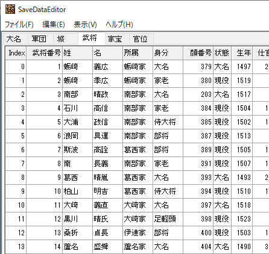

天翔記PK用のセーブデータエディタです。

SaveDataEditor.exeの置き場所は、「天翔記フォルダ(=tenshou.exeもしくはnobu6pk.exeと同じ場所)」となります。
savedat.n6pの置き場所は「天翔記フォルダ」となります。
tenshoue.exe、と同じ場所です。
savedat.n6pの置き場所は「(マイ)ドキュメント\KOEI\Nobunaga6anniv\savedat.n6p」となります。
天翔記フォルダにある「savedat.n6p」は唯の残骸ですので注意してください。